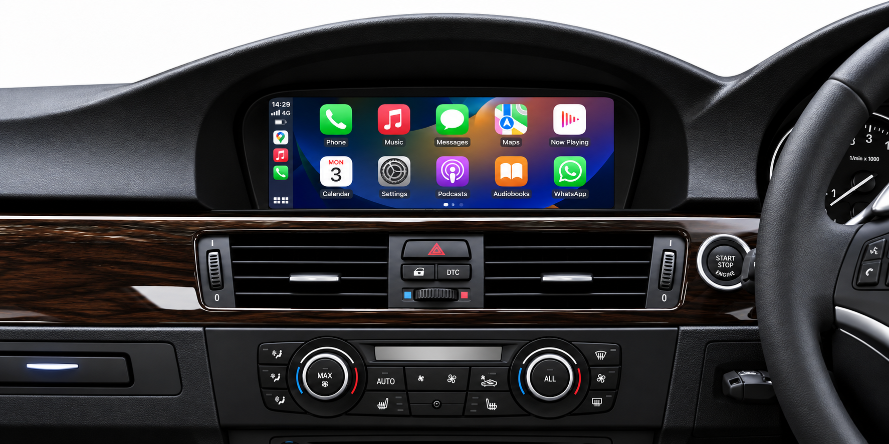

BMW Multimedia Upgrade — Option 1
Adding modern Apple CarPlay and Android Auto functionality to the existing screen without replacing it.

Adding modern Apple CarPlay and Android Auto functionality to the existing screen without replacing it.
Replacing the factory screen with a new one in a modern touchscreen display with Apple CarPlay and Android Auto support.

A rear-view camera is the perfect addition when upgrading your vehicle. It is installed either in the factory-designated location or integrated so seamlessly that it looks as if it came fitted from the factory.

A front-view camera helps you spot low obstacles and judge the distance to kerbs, making parking and manoeuvring in tight spaces easier.